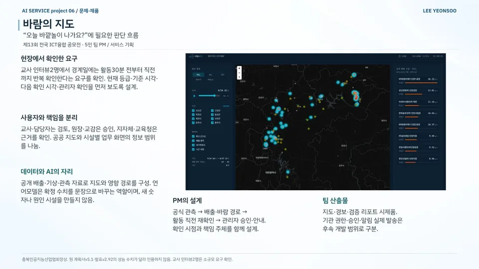
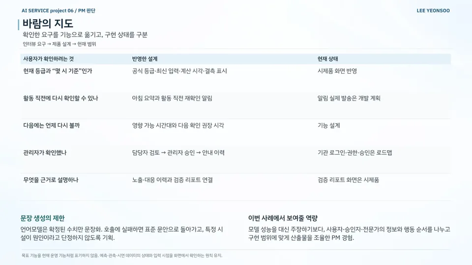
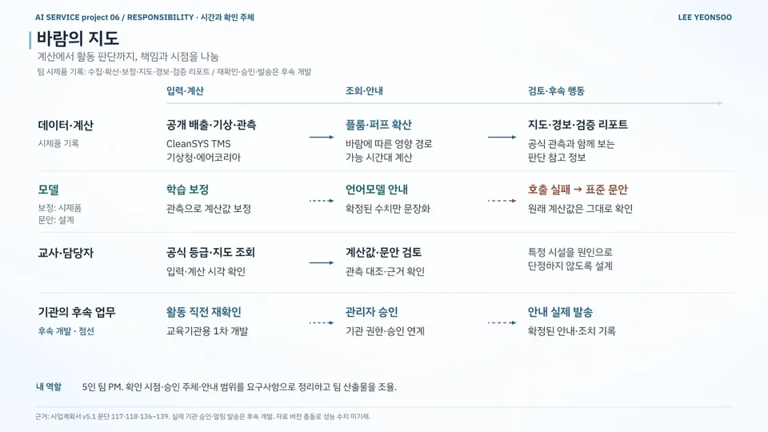
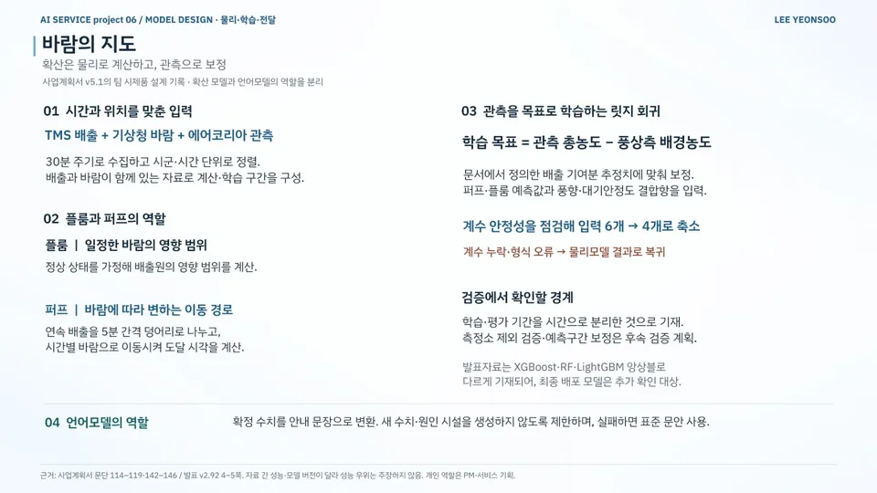

AI 서비스 기획 / 공공·정책 / 환경·교육
바람의 지도
Map of the Wind — Air-Quality Decision Flow for Outdoor Activities
바깥놀이 전 대기질 확인 시점과 담당자 승인 절차 설계
현재 상태팀 시제품 · 재확인·승인·발송은 후속 개발
내 기여팀 대표·PM으로 요구사항·기능 우선순위와 확인 시점·승인 주체·안내 범위를 정하고, 기획서·기능명세서·사업계획서를 정리해 팀 산출물을 조율했습니다. 물리모형·학습 보정·웹 구현은 팀이 함께 만들었습니다.
문제
대기질 경계일에 교사는 활동 30분 전부터 직전까지 대기질을 반복해서 확인해야 했습니다. 현재 등급과 함께 기준 시각, 다음 확인 시각, 관리자 확인 여부도 필요했습니다.
접근
- 교사 2명 인터뷰로 요구 파악 → 현재 등급·기준 시각·다음 확인 시각·관리자 확인을 먼저 보도록 설계
- 책임 분리: 교사·담당자는 검토, 원장·교감은 승인, 지자체·교육청은 근거 확인
- CleanSYS TMS 배출·기상청 바람·에어코리아 관측 자료를 30분마다 수집해 시군·시간별 정렬
- 플룸·5분 간격 퍼프 모형에 관측값을 목표로 학습한 릿지 회귀 보정 적용
핵심 판단
언어모델은 확정 수치만 문장화하고 새 수치·원인 시설을 만들지 않으며 호출 실패 시 표준 문안으로 복귀
(팀 설계) 계수 안정성을 점검해 보정 입력을 6개에서 4개로 축소하고 계수 오류 시 물리모델 결과로 복귀
재확인 알림·기관 승인·실제 발송은 후속 개발 과제로 분리
결과
- 요구 파악 인터뷰교사 2명현재 등급·기준 시각 우선
- 자료 수집 주기30분배출·바람·관측 자료 정렬
- 보정 입력6
에서 4개 사업계획서 v5.1 팀 설계
- 수집·확산·보정·지도·경보·검증 리포트로 구성된 팀 시제품
- 사용자 질문 → 반영 설계 → 현재 구현 상태를 구분한 요구사항 표
- 충북인공지능산업협회장상
AI 활용
언어모델은 확정된 수치를 안내 문장으로 바꾸는 데만 쓰고, 새 수치나 원인 시설은 만들지 않게 했습니다(실패 시 표준 문안). 학습 보정은 관측값을 목표로 한 릿지 회귀입니다(팀 설계).
한계와 다음 단계
모델과 성능 수치가 자료 버전마다 달라 비교가 어렵고, 교사 2명 인터뷰는 소규모 요구 파악입니다. 재확인 알림·기관 권한·승인·실제 발송과 측정소 제외 검증·예측구간 보정은 후속 과제입니다.
자료

크게 보기포트폴리오 슬라이드 17쪽 · 위 본문 내용을 한 장으로 정리한 슬라이드 
크게 보기포트폴리오 슬라이드 18쪽 · 위 본문 내용을 한 장으로 정리한 슬라이드 
크게 보기포트폴리오 슬라이드 19쪽 · 위 본문 내용을 한 장으로 정리한 슬라이드 
크게 보기포트폴리오 슬라이드 20쪽 · 위 본문 내용을 한 장으로 정리한 슬라이드